自主导航
从 ROS 2、Navigation 2 建图导航，到基于 Qwen 的语义导航实践。
01 / ABOUT
把想法放进仿真，再带到真实世界。
我的兴趣在于：
让机器人理解环境，
并在其中自主行动。
我于 2022 年至 2026 年在杭州电子科技大学通信工程学院学习信息对抗技术，2026 年 9 月起在北京航空航天大学学习电子信息，研究方向聚焦多智能体协同与异构机器人。
围绕 ROS 2，我实践了巡检车建图与导航、校园巡检系统和机器狗运动控制；目前进一步探索导航规划、模仿学习、强化学习及视觉模型驱动的机器人仿真。
熟悉 Linux 环境下的 Python 开发，学习过嵌入式硬件相关课程，重视从软件接口到硬件部署的动手实践。
从 ROS 2、Navigation 2 建图导航，到基于 Qwen 的语义导航实践。
在轮式无人车和四足机器狗上积累系统集成与运动控制经验。
探索 MuJoCo、Isaac Sim 等环境中的模仿学习、强化学习与动作重定位。
02 / RESEARCH & PROJECTS
从独立实践到实验室系统。
在多种仿真环境中探索机器人导航、运动学习与操作任务。
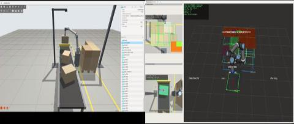
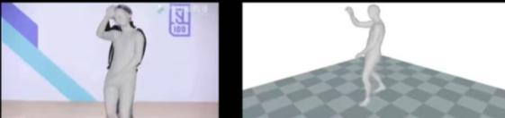
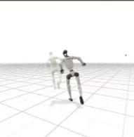
将无人车建图、语义导航与机器狗运动控制接入巡检系统。
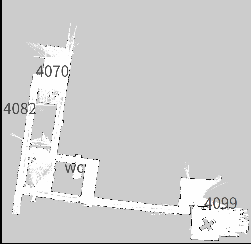
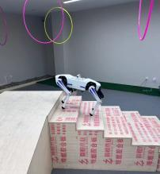
完成从自动巡检仿真到真实智能车建图与导航的实践。
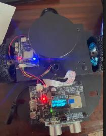
建图
定位
自主导航
03 / EXPERIMENT GALLERY
导航场景、任务路径与仿真过程。
记录机器人在不同环境中的感知、导航与协同实践。点击图片查看细节。
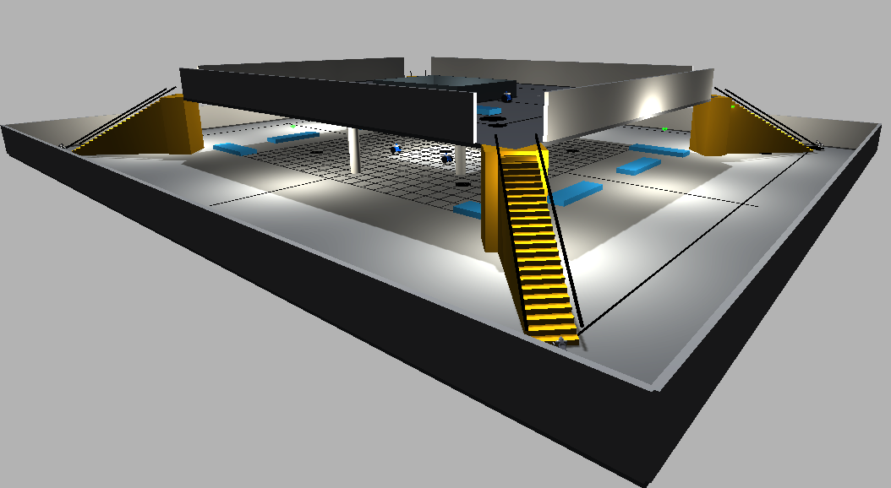
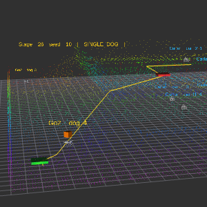
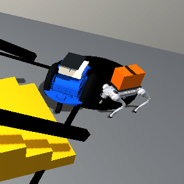
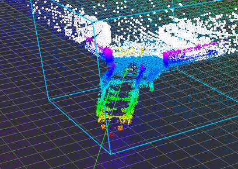
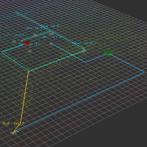
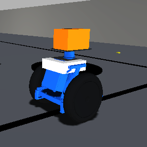
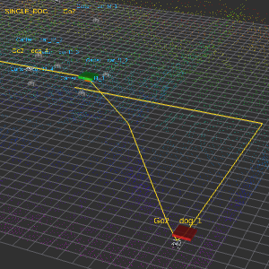
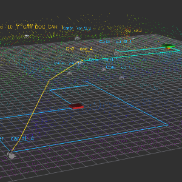
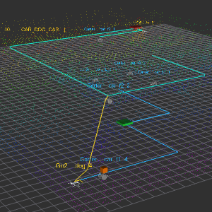
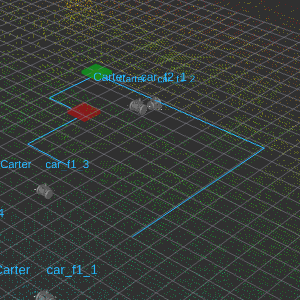
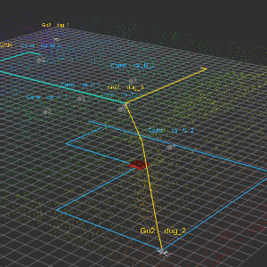
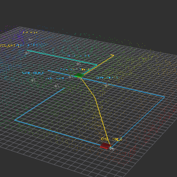
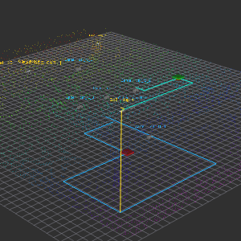
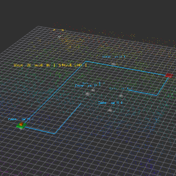
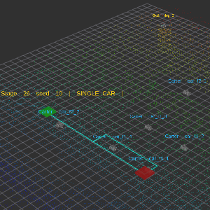
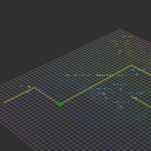
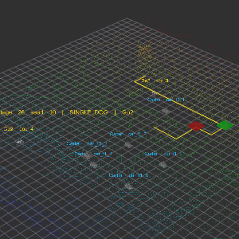
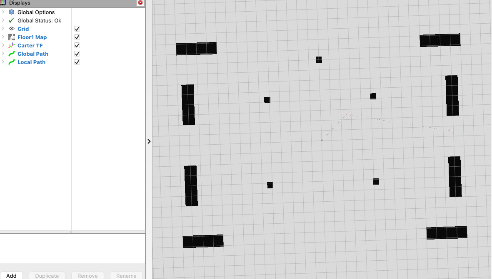
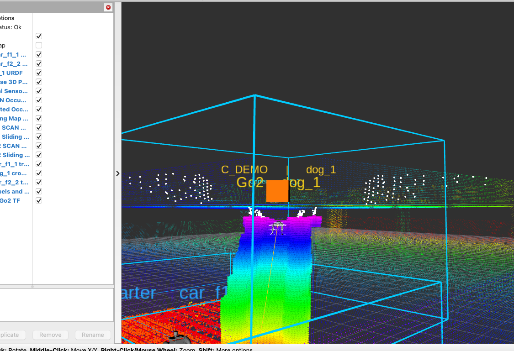
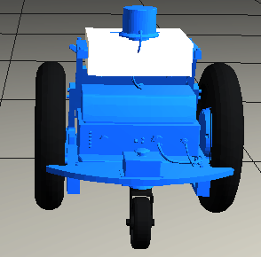
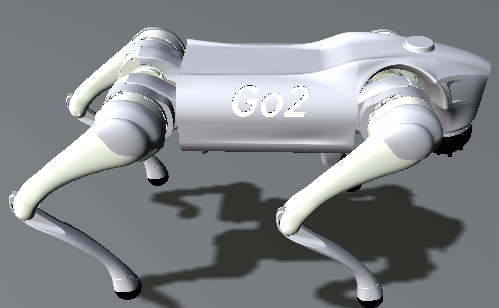
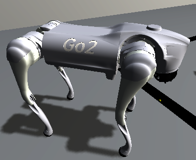
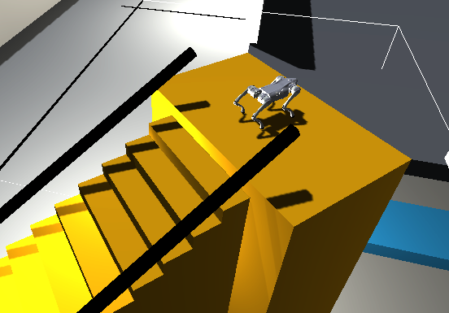
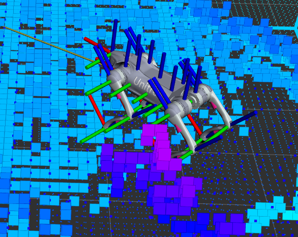
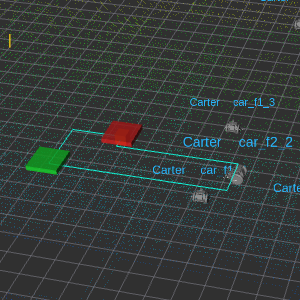
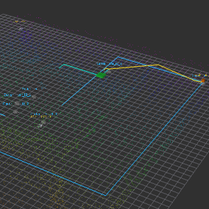
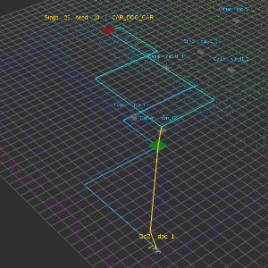
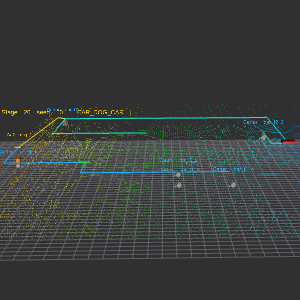
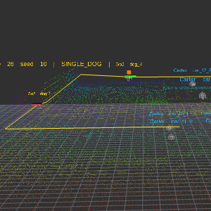
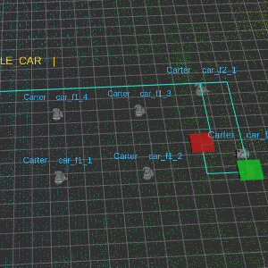
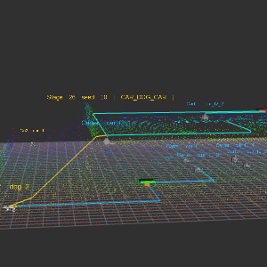
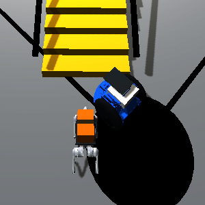
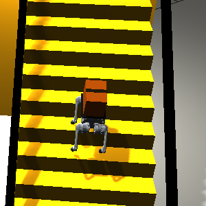
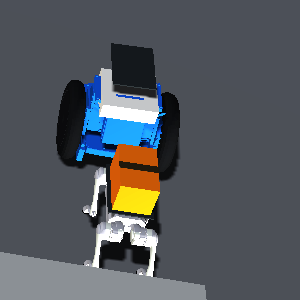
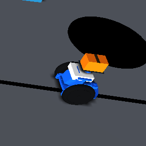
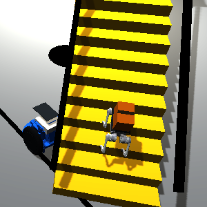
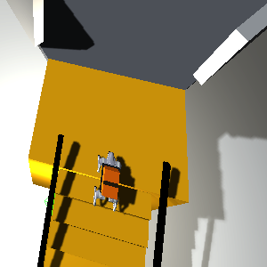
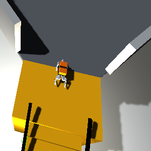
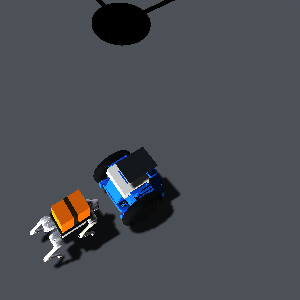
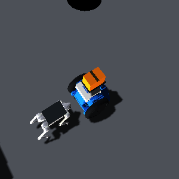
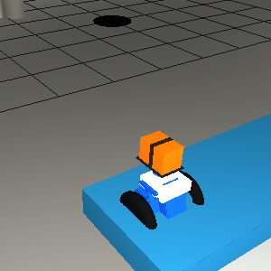
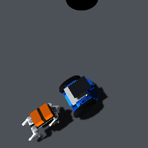
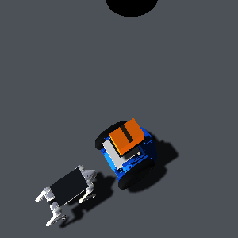
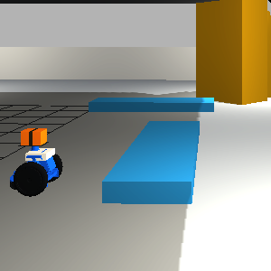
04 / EDUCATION
BEIHANG UNIVERSITY
电子信息 · 数据科学与智能计算平台
主修方向：多智能体协同、异构机器人
HANGZHOU DIANZI UNIVERSITY
通信工程学院 · 信息对抗技术
专业课程：Linux 操作系统、机器学习、物联网技术、嵌入式硬件课程与设计、C 语言程序设计。
05 / TOOLKIT & ACHIEVEMENTS
在实践中学习，在迭代中积累。
熟悉 Linux 操作系统下的 Python 开发，具备 C 语言编程与嵌入式课程实践基础。
约一年半 ROS 2 学习经历，实践建图、导航、机器人运动控制与系统接口集成。
在个人科研中探索多种仿真平台，以及导航规划、模仿学习和强化学习。
CET-4 580
CET-6 540
具备英语沟通与外文文献阅读能力。
二等奖 × 2
三等奖 × 2
杭州电子科技大学本科期间获得。
06 / GET IN TOUCH
欢迎交流机器人导航、异构机器人、多智能体协同与仿真学习。